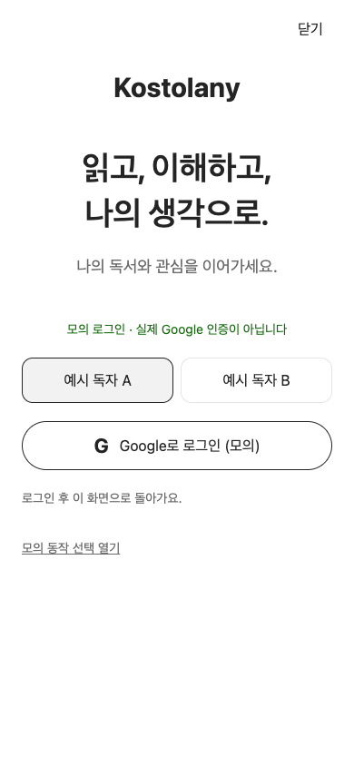
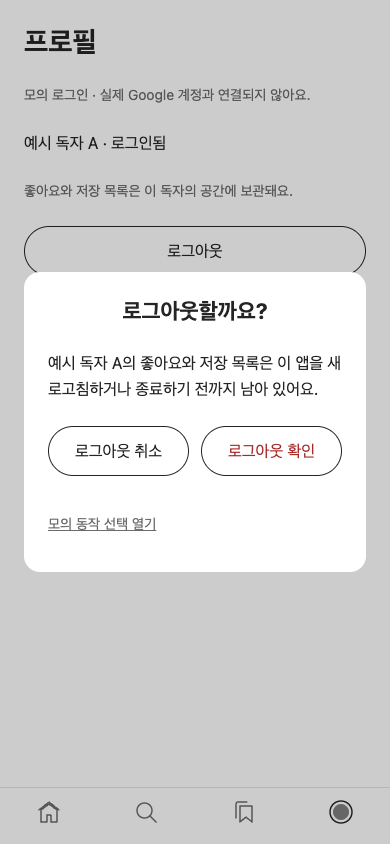
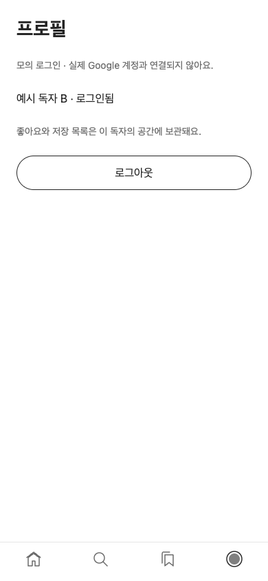
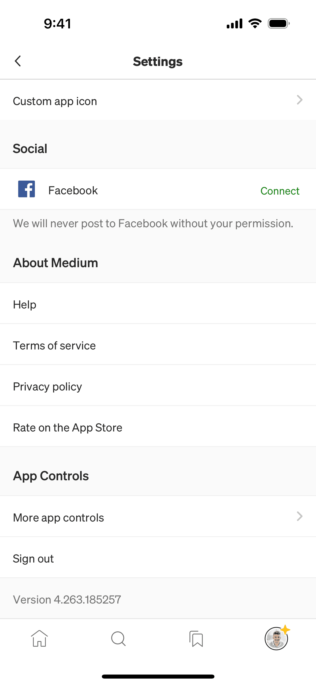
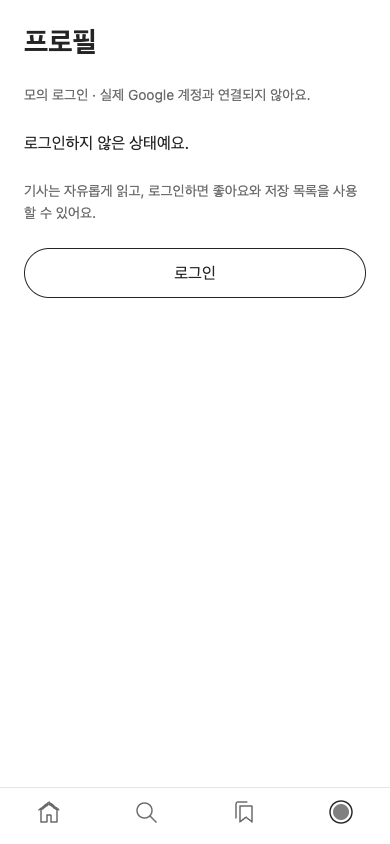

Goal 10 — 모의 로그인·취소·로그아웃
2026-11-18 KST. Medium iOS 원본 PNG(1179×2556)와 localhost:8081 Chrome 캡처를 대조했다. 앱 캡처는 보정하지 않았다. CSS 글자 2배는 OS 글자 확대와 다르며 실제 iOS·Android 실행·Safe Area·스크린리더는 미검증이다.
Google 버튼의 존재만 원본에서 확인했다. A/B 계정 선택, 성공·취소·실패·재시도, 지연, 데이터 수명은 우리 앱의 mock 설계다. 이메일·인증 코드·다른 공급자는 제외했다. 전체 결과와 출처 · 브라우저 검증 기록
로그인 공급자 선택
원본은 중앙 브랜드·큰 세리프 소개·다섯 공급자 외곽선 버튼이다. 구현은 중앙 위계·둥근 Google 버튼을 참고하고 자체 명칭·한글 본문·모의 표시·A/B 선택·닫기를 추가했다. Google 인증 완료 화면은 원본에 없다.
 Medium 원본 · 02_sc_e4d414380a1047a2b7970cf7869a0866
Medium 원본 · 02_sc_e4d414380a1047a2b7970cf7869a0866
우리 앱 · login-mobile.png로그아웃 확인
원본의 어두운 배경·중앙 확인창·취소/확인 구분을 참고했다. 네이티브 iOS 알림과 다른 RN Modal이며 긴 한국어·처리/실패·모의 결과 선택 때문에 창 높이와 버튼 모양이 다르다.
 Medium 원본 · 02_sc_2d1afd7a02a347868564f9757753d077
Medium 원본 · 02_sc_2d1afd7a02a347868564f9757753d077
우리 앱 · logout-confirm-mobile.png프로필 진입
원본은 프로필과 설정 아이콘을 표시한다. 이번 앱은 현재 예시 독자와 로그인 상태, 로그아웃만 표시한다. 설정 메뉴·프로필 편집·통계·팔로우는 이번 범위에서 제외했다.
 Medium 원본 · 01_sc_d76d3680605f4b62ab31e3039d6c4fe6
Medium 원본 · 01_sc_d76d3680605f4b62ab31e3039d6c4fe6
우리 앱 · user-b-profile-mobile.png설정 하단의 로그아웃 진입
원본은 설정의 Sign out 뒤 가입/로그인 진입으로 돌아간다. 구현은 최소 프로필 진입에서 로그아웃하고 비로그인 안내로 돌아온다. 공개 기사 열람을 계속 허용하는 자체 기본안이다.

Medium 원본 · 03_sc_c653047933aa40b2be7a8f281643d41d
우리 앱 · guest-profile-mobile.png추가로 확인한 원본
브랜드 시작·가입 공급자·설정 상단을 확인했으며 해당 후속 기능은 구현하지 않았다.
Onboarding 브랜드 시작
 가입 공급자 선택
가입 공급자 선택
 Settings 상단
Settings 상단
구현의 상태·크기별 증거
390×844, 320×740, PC 1365×900. large-text는 DOM 글자/행간 2배 후 스크롤한 실제 캡처다.